La librairie ggplot2
Limites des graphiques de base dans R
R propose de très nombreuses fonctions graphiques.
Nous en avons rencontrées quelques unes: hist(),
plot() ou encore barplot(). Cependant
ces fonctions graphiques basiques souffrent de nombreux
points faibles:
- Leurs syntaxes/arguments ne sont pas standardisés
- La modification de certains paramètres graphiques est parfois complexe et peu intuitive
- Bien qu’on puisse superposer des graphiques
(e.g.
points(),abline()sur un diagramme crée avecplot()par exemple) le nombre de combinaisons est limité. - Par ailleurs, lorsqu’on fait des statistiques descriptives on souhaite souvent partitionner la fenêtre graphique (i.e créer des facettes) en fonction des différents niveaux pris par une variable catégorielle (i.e qualitative) ou ordinale. Réaliser de tels graphiques se révèle vite extrêmement compliqué avec les outils de base.
La librairie ggplot
Dans le but de repenser la conception des graphiques dans R, Hadley Wickham a développé la librairie ggplot2 qui est rapidement devenue populaire et incontournable dans le monde de la bioinformatique et de l’analyse de données. Cette librairie constitue aujourd’hui un des réel point fort de R par rapport au langages Python ou Julia par exemple.
L’une des particularité de la librairie ggplot2 est que son développement est basé sur un modèle proposé par Leland Wilkison dans son ouvrage The Grammar of Graphics. Cet ouvrage propose une réflexion sur les composants des graphiques. Pour Leland Wilkison :
- un graphique permet une correspondance entre des données et des attributs esthétiques (couleur, forme, taille…) d’objets géométriques (points, lignes, barres…).
- Le graphique peut également contenir des transformations des données (e.g. échelle en logarithme) et est dessiné dans un système de coordonnées spécifique (e.g. cartésien ou polaire).
- Les facettes peuvent être utilisées pour générer le même graphique pour différents sous-ensembles de l’ensemble de données.
C’est la combinaison de ces composants indépendants qui constitue un graphique. Dans ggplot2 ces différentes composantes sont modélisées sous forme de couches (layers) qu’on peut ajouter les unes aux autres simplément avec l’opérateur d’addition. Le succès de ggplot2 a conduit de nombreux développeurs à produire des extensions qui permettent aujourd’hui d’avoir une suite de fonctions graphiques extrêmement riche.
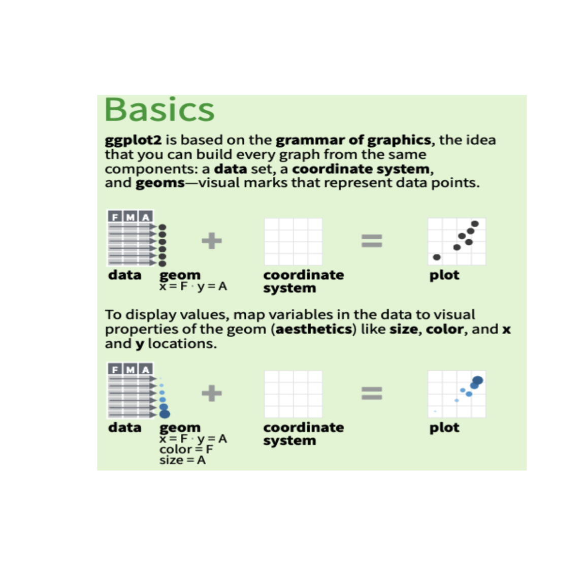
Vous trouverez en complément de ce cours un aide mémoire sur ggplot2 à cette adresse.
Le jeu de données
Nous utiliserons pour débuter le jeu de données “diamonds” de la
librairie ggplot2. Le jeu de données
diamonds contient diverses informations relatives à
54000 diamants. Il fait partie du package ggplot2. Les
informations suivantes suivantes sont disponibles :
- Carat, taille, couleur, clarté, profondeur, table, prix, x, y, z
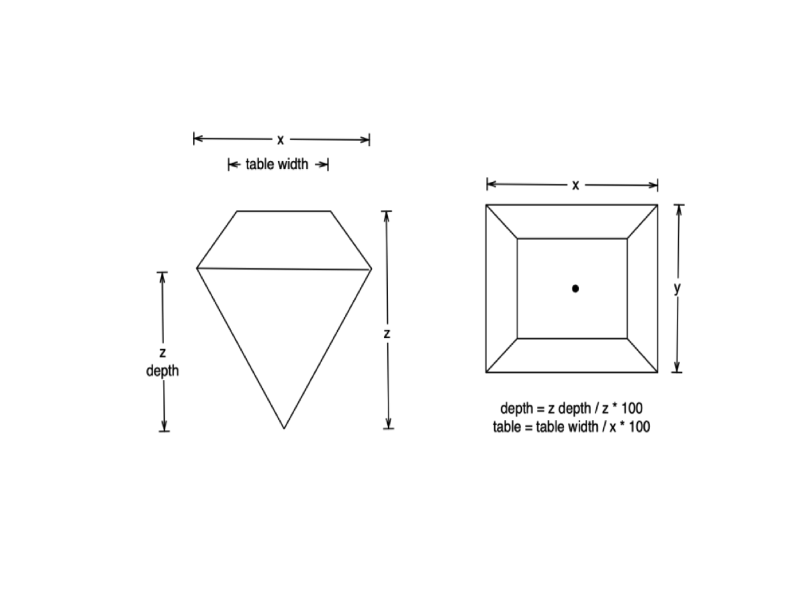
Chargeons le jeu de données.
## Chargeons la librairie ggplot2
library(ggplot2)
## Ensuite chargeons le jeu de données chickwts
data(diamonds, package = "ggplot2")Les premières lignes du jeu de données sont les suivantes:
head(diamonds)Les type des colonnes sont:
lapply(diamonds, class)Notez que l’objet diamonds pourrait être un
data.frame. En fait il s’agit d’un objet de type
tibblequi est un data.frame dans lequel les colonnes sont
un peu plus typées. On fait par exemple la distinction entre les réels
(<dbl>) et les entiers (<int>).
Cependant on peut tout à fait convertir ce tibble en
data.frame pour retrouver un objet que l’on connait bien
maintenant.
diamonds <- as.data.frame(diamonds)
head(diamonds)Premiers diagrammes
Nuages de points
Il y a plus 50 types de graphiques (géométries) disponibles dans
ggplot2. Bien plus, si on considère les extensions de
ggplot2.
On va commencer avec un simple nuage de points. Pour créer notre
nuage de points (scatterplot) on va utiliser la géométrie
geom_points(). Il faudra donc :
- (i) Des données obligatoirement au format
data.frameoutibble. - (ii) associer ces données à un object
ggplot (
ggplot(data=diamonds)). . - (ii) définir les variables/colonnes du data.frame
que l’on souhaite analyser et les passer à la fonction
aes()s.
Pour un nuage de points il y a deux esthétiques obligatoire: \(x\) (axe des x) et \(y\) (axe des y). Les variable \(x\) et \(y\) sont généralement numériques. Ici on
représentera les colonne carat et price.
Toutes deux sont des colonnes de numériques.
# On crée le diagramme en passant
# à la fonction ggplot le data.frame
# (diamonds) et le résultat de la fonction
# aes() qui permet d'associer des noms de
# colonnes aux éléments d'esthétique.
p <- ggplot(data=diamonds, aes(x=carat, y=price))
## On ajouter ensuite une géométrie
p.sc <- p + geom_point()
print(p.sc)Les esthétiques
on peut modifier l’esthétiques de la forme géométrique (ici des
points) en passant des arguments à la fonction de géométrie (ici
geom_points()).
Pour la géométrie geom_points, les esthétiques suivantes sont notamment acceptées :
| Esthétique | Objectif | Valeur |
|---|---|---|
| x | Valeurs axe des x | Numérique ou facteur |
| y | Valeurs axe des y | Numérique ou facteur |
| alpha | Opacité des points | Numérique entre 0 et 1 |
| colour or color | Couleurs des points ou des bordures de points (si les points ont des bordures) | Une couleur |
| fill | Remplissage, si le point à un remplissage | Une couleur |
| shape | Les formes des points | Un entier |
| size | Les tailles des points | Numérique |
| stroke | Tailles des bordures | Numérique |
| … |
Par exemple, on peut changer la couleur et la taille des points ainsi:
p <- ggplot(data=diamonds, aes(x=carat, y=price))
p + geom_point(size=2, colour="red")La forme des points (esthétique shape)
Les correspondances entre la forme des points et les variables numériques passées sont disponibles ci-dessous:
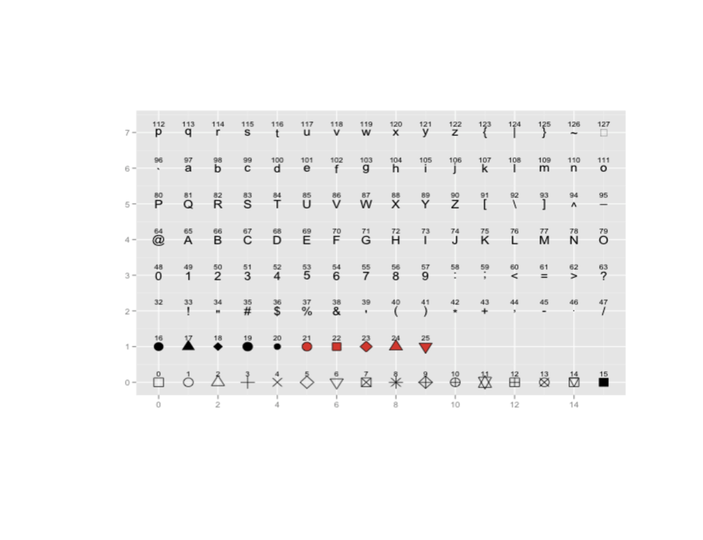
D’autres formes de points sont possibles par exemple en utilisant la librairies ggstar:

Plus généralement, n’importe quelle image peut devenir un point (en utilisant ggimage).
Exercice
- En utilisant la forme de point 22 (
shape=22) réalisez un nuage de points (geom_point()) et coloriez l’intérieur des points et les bordures avec des couleurs de votre choix. Modifiez l’opacité pour mieux visualiser les points se chevauchant.
colors()
p <- ggplot(data=diamonds, aes(x=carat, y=price))p <- ggplot(data=diamonds, aes(x=carat, y=price))
p + geom_point(size=2, shape=22, fill="violet", color="darkviolet", alpha=0.3)Les couleurs des points (esthétiques colour et fill)
Les couleurs jouent un rôle essentiel dans la visualisation de données en programmation, et R offre une multitude d’options pour manipuler et utiliser des couleurs dans vos graphiques et analyses.
R dispose d’une fonction pratique appelée colors() qui
permet d’afficher les noms des couleurs disponibles dans R. Cette
fonction renvoie un vecteur contenant les noms des couleurs prédéfinies.
Voici un exemple pour afficher quelques-unes de ces couleurs :
# Afficher les noms des couleurs disponibles dans R
color_avail <- colors()
print(length(color_avail))
head(color_avail, 20)Outre les noms de couleurs, il est courant de représenter les couleurs en utilisant le format hexadécimal. Dans ce format, chaque couleur est représentée par une combinaison de six chiffres hexadécimaux, qui correspondent à la quantité de rouge (R), de vert (G) et de bleu (B) dans la couleur. Chaque couleur à un niveau d’intensité entre 00 (minimum) et FF (maximum). Par exemple, le vert est représenté par #00FF00, le rouge par #FF0000, le noir par #000000, le blanc par #FFFFFF…
Dans R, vous pouvez spécifier les couleurs au format hexadécimal en utilisant simplement le préfixe # suivi de la combinaison hexadécimale appropriée. Par exemple
p <- ggplot(data=diamonds, aes(x=carat, y=price))
violet <- "#7F00FF"
darkviolet <- "#9400D3"
p + geom_point(size=2, shape=22, fill=violet, color=darkviolet, alpha=0.3)- En utilisant le site https://paletton.com/, choisissez deux
couleurs complémentaires (activez add complementary) au format
hexadecimal pour la bordure et l’intérieur des points du diagramme
ci-dessous. Elargissez la taille de la bordure avec l’argument
stroke.
p <- ggplot(data=diamonds, aes(x=carat, y=price)) + geom_point(shape=22)p + geom_point(size=2, shape=22, fill="#AA9239", color="#3A3276", alpha=0.6, stroke=1.2)Tous les éléments esthétiques peuvent être associés à des variables
Le contrôle des esthétiques dans ggplot2 offre une flexibilité
remarquable en permettant de personnaliser les graphiques avec des
valeurs fixes comme nous l’avons (e.g.
couleurs, la taille, l’opacité) mais aussi avec des
variables. Cette caractéristique unique permet d’obtenir des
graphiques dynamiques et personnalisés en fonction de vos données. On
pourra modifier la couleur, la taille, la forme (…) des points en
fonction des valeurs d’une colonne. Pour ce faire, on associera
des variables supplémentaires à des esthétiques via la fonction
aes().
Par exemple, nous pouvons utiliser une variable comme
cut pour contrôler la couleur des points
et une autre variable comme depth pour ajuster leur
taille :
p <- ggplot(data = diamonds, aes(x = carat,
y = price)) +
geom_point(aes(color = cut,
size = depth), alpha=0.5)
# ou
# p <- ggplot(data = diamonds, aes(x = carat,
# y = price,
# color = cut,
# size = depth)) +
# geom_point(alpha=0.5)
print(p)Si vous souhaitez personnaliser les couleurs, vous pouvez ajouter une
couche/layer au diagramme qui utilise les fonctions
scale_color_manual() ou scale_fill_manual()
pour définir manuellement les couleurs des esthétiques
color et fill.
- Complétez le code suivant pour associer au diagramme \(p\) des couleurs que vous définirez :
levels(diamonds$cut)
p <- ggplot(data = diamonds, aes(x = carat,
y = price,
color = cut,
size = depth)) +
geom_point(alpha=1, shape=16) +
scale_color_manual(values = c("Ideal" = "#A22200",___))
print(p)levels(diamonds$cut)
p <- ggplot(data = diamonds, aes(x = carat,
y = price,
color = cut,
size = depth)) +
geom_point(alpha=1, shape=16) +
scale_color_manual(values = c("Ideal" = "#A22200",
"Premium" = "#0871A4",
"Very Good" = "#00B850",
"Good" = "#226666",
"Fair" = "#FF8900"))
print(p)ggplot2 offre une grande souplesse dans le contrôle des esthétiques de vos graphiques. Vous pouvez utiliser des valeurs fixes pour obtenir des graphiques statiques, mais l’utilisation de variables permet une personnalisation encore plus dynamique et adaptée aux données.
Visualiser les distributions des variables
L’analyse des distributions est une étape cruciale dans l’exploration de données et dans la compréhension des caractéristiques d’un jeu de données. Avec ggplot2, nous pouvons facilement créer des graphiques tels que des histogrammes, des diagrammes de densité, des boîtes à moustache ou des diagrammes en violon pour analyser les distributions.
Histogrammes
Pour créer un histogramme pour la variable “price” du jeu de données
“diamonds”, nous utilisons la fonction geom_histogram(). Dans le cas de
l’histogramme, l’axe des x correspond à des intervals (bins) et
l’axe des y au nombre de fois où les valeurs de comptage sont observées
dans ces intervalles. Il n’y aura donc qu’une seule variable à fournir
pour la fonction aes().
p <- ggplot(data = diamonds, aes(x = price)) +
geom_histogram(binwidth = 1000,
color = "black",
fill = "lightblue") +
labs(title = "Histogramme de Price",
x = "Prix",
y = "Fréquence")
print(p)Dans cet histogramme, nous avons utilisé un intervalle de classe de
1000$ pour regrouper les valeurs de la variable price
(0-1000$, 1000-2000$, 2000-3000$…). Le graphique affiche la fréquence
des prix de diamants dans chaque intervalle de classe.
- Le paramètre important d’un histogramme est la taille de
l’intervalle. Ici, dans la fonction
geom_histogramil est contrôlé par l’argumentbinwidth(taille des intervalles) oubins(nombre d’intervalles). Effectuez des histogrammes avec des tailles d’intervalles de 250$, 500$, 1000$ et 10000$.
ggplot(data = diamonds, aes(x = price)) +
geom_histogram(binwidth = 1000)ggplot(data = diamonds, aes(x = price)) +
geom_histogram(binwidth = 250, color = "black", fill = "lightblue")
ggplot(data = diamonds, aes(x = price)) +
geom_histogram(binwidth = 500, color = "black", fill = "lightblue")
ggplot(data = diamonds, aes(x = price)) +
geom_histogram(binwidth = 1000, color = "black", fill = "lightblue")
ggplot(data = diamonds, aes(x = price)) +
geom_histogram(binwidth = 10000, color = "black", fill = "lightblue")Histogrammes superposés
Dadre le cadre de geom_point() la géométrie
est un point et on peut associer une variable à la coloration
des points. Ici, pour un histogramme, c’est la même
chose sauf que la géométrie est un histogramme. Si on
utilise cut pour la couleur on obtiendra des histogrammes
de couleurs différente.
- Complétez le code suivant afin que la coloration soit associée à la
qualité de la coupe (
cut) des diamants. Affectez les couleur de votre choix avecscale_fill_manual()
col_palette <- c("Ideal" = "#A22200", ___)
p <- ggplot(data = diamonds, aes(x = price, ___)) +
geom_histogram(binwidth = 1000, color = "white") +
scale_fill_manual(values=col_palette)
print(p)col_palette <- c("Ideal" = "#A22200",
"Premium" = "#0871A4",
"Very Good" = "#00B850",
"Good" = "#226666",
"Fair" = "#FF8900")
p <- ggplot(data = diamonds, aes(x = price, fill=cut)) +
geom_histogram(binwidth = 1000, color = "white") +
scale_fill_manual(values=col_palette)On voit ici la limite de l’histogramme pour visualiser les distribution. Dans le cas présent, une autre solution pour analyser les distribution des prix d’utiliser l’analyse de densité. Nous verrons plus tard qu’il est aussi possible de réaliser des panels d’histogrammes (facettes).
Profils de densités
Le graphique de densité est un autre moyen de visualiser la
distribution des valeurs d’une variable numérique. On peut le réaliser à
l’aide de la fonction geom_density(). La fonction
geom_density() affiche un modèle de distribution qui
cherche à épouser au mieux les données de l’histogramme. Il s’agit
cependant d’un modèle et le paramètre adjust de cette
fonction peut agir fortement sur la représentation. Suivant la valeur de
àdjust` le modèle pourra avoir plus ou moins tendance à être sur- ou
sous-ajusté.
ggplot(data = diamonds, aes(x = price)) +
geom_density(adjust=1)- Refaites le diagramme de densité précédent avec les valeurs suivantes pour adjust: 1, 3/4, 1/2, 1/4 et 1/8.
ggplot(data = diamonds, aes(x = price)) + geom_density(adjust = 1)ggplot(data = diamonds, aes(x = price)) + geom_density(adjust = 1)
ggplot(data = diamonds, aes(x = price)) + geom_density(adjust = 3/4)
ggplot(data = diamonds, aes(x = price)) + geom_density(adjust = 1/2)
ggplot(data = diamonds, aes(x = price)) + geom_density(adjust = 1/4)
ggplot(data = diamonds, aes(x = price)) + geom_density(adjust = 1/8)- Complétez le code pour produire un diagramme dans lequel les
densités pour les différentes tailles (
cut) sont représentées avec une couleur de bordure pour chacune d’entre elles. Appliquez vos propres couleurs.
p <- ggplot(data = diamonds, aes(x = price, ___ )) +
geom_density(adjust = 1/2, linewidth=0.5) +
___
print(p)p <- ggplot(data = diamonds, aes(x = price, color=cut )) +
geom_density(adjust = 1/2, linewidth=0.5) +
scale_color_manual(values=c("Ideal" = "#A22200",
"Premium" = "#0871A4",
"Very Good" = "#00B850",
"Good" = "#226666",
"Fair" = "#FF8900"))
print(p)- Complétez le code pour produire un diagramme dans lequel les
densités pour les différentes tailles (
cut) sont représentées avec une couleur de remplissage pour chacune d’entre elles. Appliquez vos propres couleurs.
p <- ggplot(data = diamonds, aes(x = price, ___ )) +
geom_density(adjust = 1/2, size=0.5, color="white") +
scale_ ___ _manual(values= ___ )
print(p)p <- ggplot(data = diamonds, aes(x = price, fill=cut )) +
geom_density(adjust = 1/2, size=0.5, color="white") +
scale_fill_manual(values=c("Ideal" = "#A22200",
"Premium" = "#0871A4",
"Very Good" = "#00B850",
"Good" = "#226666",
"Fair" = "#FF8900"))
print(p)Boîtes à moustaches et diagrammes en violon
Les boîtes à moustaches (boxplots) et diagrammes en violon (violin plots) peuvent être utilisés pour représenter les distributions associées à un jeu de données. On donne ci-dessous quelques exemples.
Comme toujours, pour créer notre diagramme on va tout d’abord :
- (i) associer des données (data.frame ou tibble) à un object
(
data=diamonds). - (ii) définir les variables/colonnes du data.frame que l’on souhaite analyser et les passer à la fonction aes().
Pour un boxplot ou un violin plots, les variable esthétiques acceptées sont globalement les mêmes que pour geom_points. Cependant, une différence majeure est que la variable \(x\) est obligatoirement un facteur (qui indique les noms des boîtes sur l’axe des \(x\)) et la variable \(y\) est obligatoirement un numérique (les valeurs prises par chacune des modalités).
# On crée le diagramme en passant
# à la fonction ggplot le data.frame
# (diamonds) et le résultat de la fonction
# aes() qui permet d'associer des noms de
# colonnes aux éléments d'esthétique.
p <- ggplot(data=diamonds, aes(x=cut, y=price))
## On ajoute ensuite une géométrie
p.bp <- p + geom_boxplot()
print(p.bp)- Sachant que geom_boxplot() et
geom_violin() partagent les mêmes éléments
d’esthétique, complétez le code suivant. Celui-ci permet de créez un
diagramme en violon dans lequel les couleurs des violons correspondent
au type de taille (
cut).
col_palette <- c("Ideal" = "#A222A0", ___)
p <- ggplot(data=diamonds, aes(x=cut, y=price, fill=___)) +
geom_violin(color=___) +
scale_fill_manual(values=___)
print(p)col_palette <- c("Ideal" = "#A222A0",
"Premium" = "#0871A4",
"Very Good" = "#00B850",
"Good" = "#226666",
"Fair" = "#FF8900")
p <- ggplot(data=diamonds, aes(x=cut, y=price, fill=cut)) +
geom_violin(color="black") +
scale_fill_manual(values=col_palette)
print(p)Superposer des éléments graphiques
Exemple autour du violin plot
Le modèle sous-jacent à ggplot permet de superposer relativement facilement des couches graphiques.
Soit le diagramme précédent, \(p\), produit avec la géométrie geom_violin().
col_palette <- c("Ideal" = "#A22200",
"Premium" = "#0871A4",
"Very Good" = "#00B850",
"Good" = "#226666",
"Fair" = "#FF8900")
p <- ggplot(data=diamonds, aes(x=cut, y=price, fill=cut))
p + geom_violin(color="black") +
scale_fill_manual(values=col_palette)On pourrait souhaiter voir les points ayant permis la construction du
modèle en violon. On pourrait se dire qu’on peut tout simplement ajouter
une géométrie type geom_points(). Rien de plus simple il
suffit d’ajouter une couche geom_point() à l’aide de
l’opérateur d’addition (+). Les esthétiques sont héritées
et donc x=cut et y=pricesont passé
naturellement à geom_point(). Un des soucis est que les
points sont alignés verticalement…
col_palette <- c("Ideal" = "#A22200",
"Premium" = "#0871A4",
"Very Good" = "#00B850",
"Good" = "#226666",
"Fair" = "#FF8900")
p <- ggplot(data=diamonds, aes(x=cut, y=price, fill=cut))
p <- p + geom_violin(color="black") +
scale_fill_manual(values=col_palette) +
geom_point()
print(p)On peut y remedier en utilisant plutôt geom_jitter()
(plutôt que geom_point()) qui va ajouter un peu de
bruit sur l’axe des \(x\) afin
de déplacer les points des lignes verticales.
col_palette <- c("Ideal" = "#A22200",
"Premium" = "#0871A4",
"Very Good" = "#00B850",
"Good" = "#226666",
"Fair" = "#FF8900")
p <- ggplot(data=diamonds, aes(x=cut, y=price, fill=cut))
p <- p + geom_violin(color="black") +
scale_fill_manual(values=col_palette) +
geom_jitter(size=0.01)
print(p)Ce n’est pas idéale ici car nous avons beaucoup de points dans chacune des classes. On peut plutôt inverser les couches.
col_palette <- c("Ideal" = "#A22200",
"Premium" = "#0871A4",
"Very Good" = "#00B850",
"Good" = "#226666",
"Fair" = "#FF8900")
p <- ggplot(data=diamonds, aes(x=cut, y=price, fill=cut))
p <- p + geom_jitter(size=0.01) +
geom_violin(color="black") +
scale_fill_manual(values=col_palette)
print(p)- Complétez le code précédant pour que les points aient la même couleur que les violons.
col_palette <- c("Ideal" = "#A22200",
"Premium" = "#0871A4",
"Very Good" = "#00B850",
"Good" = "#226666",
"Fair" = "#FF8900")
p <- ggplot(data=diamonds, aes(x=cut, y=price, fill=cut, ___))
p <- p + geom_jitter(size=0.01) +
geom_violin(color="black") +
scale_fill_manual(values=col_palette) +
___
prin(p)col_palette <- c("Ideal" = "#A22200",
"Premium" = "#0871A4",
"Very Good" = "#00B850",
"Good" = "#226666",
"Fair" = "#FF8900")
p <- ggplot(data=diamonds, aes(x=cut, y=price, fill=cut, color=cut))
p <- p + geom_jitter(size=0.01) +
geom_violin(color="black") +
scale_fill_manual(values=col_palette) +
scale_color_manual(values=col_palette)
print(p)Diagrammes à barres
La fonction geom_bar() est utilisée dans ggplot2
pour créer des diagrammes à barres, qui sont
particulièrement adaptés pour représenter des données catégorielles.
Cette fonction permet de construire des barres verticales ou
horizontales en fonction des variables spécifiées dans
l’esthétique \(x\) et \(y\) de la fonction
aes().
Un diagramme simple
Dans cet exemple, nous allons créer un graphique à
barres pour représenter la fréquence des différentes tailles de
diamants (cut) dans le jeu de données
diamonds. La fonction va compter le nombre
d’occurrence de tailles ‘Fair’, ‘Good’ ‘Very Good’… L’argument
position = "dodge" permet de placer les barres côte à côte,
ce qui facilite la comparaison des fréquences entre les différentes
catégories. A notez ci-dessous l’utilisation de labs() qui
permet de contrôler les noms des axes.
p <- ggplot(data = diamonds, aes(x = cut, fill = cut)) +
geom_bar(position = "dodge") +
labs(title = "Nombre de Coupes de Diamants",
x = "Coupe",
y = "Nombre")
print(p)- Modifier le code suivant pour associer une couleur à chaque barre.
p <- ggplot(data = diamonds, aes(x = cut)) +
geom_bar(position = "dodge") +
labs(title = "Nombre de type de clarté par Coupe",
x = "Coupe",
y = "Nombre")
print(p)col_palette <- c("Ideal" = "#A22200",
"Premium" = "#0871A4",
"Very Good" = "#00B850",
"Good" = "#226666",
"Fair" = "#FF8900")
p <- ggplot(data = diamonds, aes(x = cut, fill=cut)) +
geom_bar(position = "dodge") +
labs(title = "Nombre de type de clarté par Coupe",
x = "Coupe",
y = "Nombre",
fill="Coupe") +
scale_fill_manual(values=col_palette)
print(p)Exemple à deux variables catégorielles
Dans cet exemple plus complexe, nous allons créer un graphique à
barres en utilisant cut comme axe x et clarity
comme axe y pour explorer la fréquence des différentes clartés de
diamants (clarity) pour chaque type de coupes
(cut). Le principe est de dire que les barres seront
colorés (fill) en fonction de la variable
clarity.
Nous utiliserons l’argument position = "stack"
(i.e. empilée) pour placer les comptes des différentes clartés
les une sur les autres.
p <- ggplot(data = diamonds, aes(x = cut, fill=clarity)) +
geom_bar(position = "stack") +
labs(title = "Nombre de type de clarté par Coupe",
x = "Coupe",
y = "Nombre")
print(p)Notez que clarity est une variable catégorielle
ordinale et ggplot choisit donc, naturellement, un
gradient discret de couleurs pour les représenter.
head(diamonds$clarity)Comme dans les exemples précédents, on pourra changer les couleurs
avec scale_fill_manual. On peut cependant, à ce stade,
introduire une nouvelle function, scale_fill_brewer(), qui
nécessite d’installer la libraire RColorBrewer. Pour cette
fonction, on devra choisir le nom d’une des palettes renvoyées par
RColorBrewer::display.brewer.all(). On passera à la
fonction le nom d’une des palettes (e.g;
scale_fill_brewer(palette='Purples'))
if(!require('RColorBrewer')){install.packages('RColorBrewer')}
RColorBrewer::display.brewer.all()Il existe trois types de palettes dans RColorBrewer:
séquentielle, divergente et qualitative.
- Les palettes séquentielles conviennent aux données ordonnées qui progressent de la valeur la plus faible à la plus élevée.
- Les palettes divergentes mettent l’accent sur les valeurs critiques moyennes et les extrêmes aux deux extrémités de la plage de données.
- Les palettes qualitatives conviennent mieux à la représentation de données nominales ou catégorielles.
- Testez différentes palettes séquentielles de RColorBrewer (Blues, BuGn, BuPu, GnBu, Greens, Greys, Oranges, OrRd, PuBu, PuBuGn, PuRd, Purples, RdPu, Reds, YlGn, YlGnBu, YlOrBr, YlOrRd) pour la représentation.
p <- ggplot(data = diamonds, aes(x = cut, fill=clarity)) +
geom_bar(position = "stack", color="black") +
labs(title = "Nombre de type de clarté par Coupe",
x = "Coupe",
y = "Nombre") + scale_fill_brewer(palette='___')
print(p)p <- ggplot(data = diamonds, aes(x = cut, fill=clarity)) +
geom_bar(position = "stack", color="black") +
labs(title = "Nombre de type de clarté par Coupe",
x = "Coupe",
y = "Nombre") + scale_fill_brewer(palette='Purples')
print(p)Positionnement des barres
Dans ggplot2, l’argument ‘position’ de
geom_bar conditionne le positionnement des
barres et peux drastiquement changer la perception…
- ‘Stack’ empile les barres pour représenter des valeurs cumulées, utile pour montrer les totaux et proportions des sous-catégories.
- ‘Dodge’ place les barres côte à côte sans chevauchement, idéal pour comparer directement les valeurs entre catégories.
- ‘Dodge2’ est similaire à dodge’ mais sépare davantage les barres en fonction d’une autre variable, créant des groupes côte à côte.
- ‘Fill’ Rempli la totalité de la barre. Utile pour visualiser des proportions/pourcentages.
- ‘Identity’ place les barres les unes devant les autres. Attention c’est rarement ce qu’on veut…
- ‘Jitter’ qui ajoute un peu de bruit sur l’axe des x. Cette argument, dans le contexte du diagramme à barre, a peu d’intérêt. Là aussi, les barres sont placées les unes devant les autres.
- Dans le diagramme ci-dessous, changez successivement la position en ‘stack’, ‘dodge’ et ‘fill’.
p <- ggplot(data = diamonds, aes(x = cut, fill=clarity)) +
geom_bar(position = "___", color="black") +
labs(title = "Nombre de type de clarté par Coupe",
x = "Coupe",
y = "Nombre") + scale_fill_brewer(palette='Oranges')
print(p)library(RColorBrewer)
display.brewer.all()
ggplot(data = diamonds, aes(x = cut, fill=clarity)) +
geom_bar(position = "stack", color="black") +
labs(title = "Nombre de type de clarté par Coupe",
x = "Coupe",
y = "Nombre") + scale_fill_brewer(palette='Purples')
ggplot(data = diamonds, aes(x = cut, fill=clarity)) +
geom_bar(position = "dodge", color="black") +
labs(title = "Nombre de type de clarté par Coupe",
x = "Coupe",
y = "Nombre") + scale_fill_brewer(palette='Purples')
ggplot(data = diamonds, aes(x = cut, fill=clarity)) +
geom_bar(position = "fill", color="black") +
labs(title = "Proportion des type de clarté par Coupe",
x = "Coupe",
y = "Proportion") + scale_fill_brewer(palette='Purples')Exercices de consolidation
Jeu de données Iris
- Créez un graphique comme celui donné ci-dessous qui compare les
longueurs de sépale (
Sepal.Length) pour chaque espèce de fleurs (Species) dans le jeu de données iris (data(iris)). Le graphique doit montrer les distributions sous forme de boîtes (geom_boxplot()) avec des points jittered (geom_jitter()) pour visualiser chaque observation individuelle. Les axes doivent être renommés “Espèces” et “Longueurs des sépales”. Chaque espèce est associée à une couleur de boîte (‘fill’).
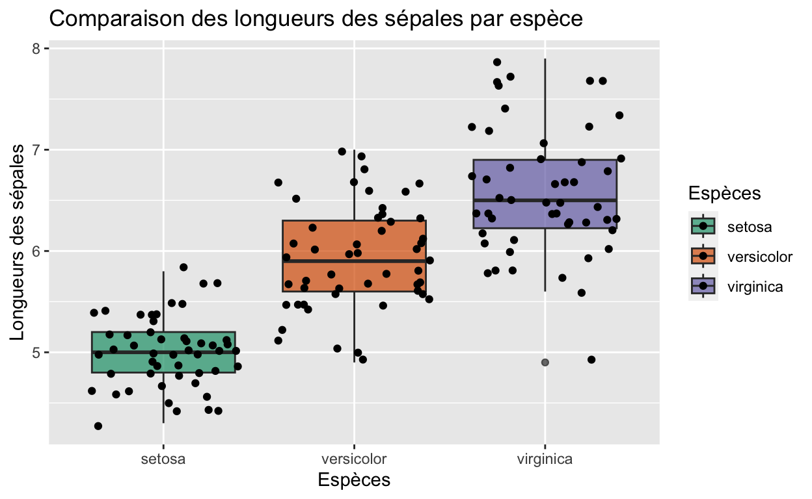
data(iris)data(iris)
# Exemple de comparaison de distributions avec des violons
p <- ggplot(iris, aes(x = Species, y = Sepal.Length, fill = Species)) +
geom_boxplot(alpha = 0.7) +
geom_jitter() +
scale_fill_brewer(palette='Dark2') +
labs(title = "Comparaison des longueurs des sépales par espèce",
x = "Espèces",
y = "Longueurs des sépales",
fill = "Espèces")
print(p)Jeu de données ToothGrowth
Créez un graphique à violon comme celui donné ci-dessous pour comparer la distribution de la longueur des dents (
len) en fonction de la méthode d’administration de la vitamine C (supp) dans le jeu de donnéesToothGrowth. LLes modalités ‘OJ’ et ‘VC’ devront être remplacés par ‘Orange juice’ et ‘Ascorbic acid’.
Ajoutez des “rugs” (petites barres) sur le graphique (
geom_rug()) pour visualiser la distribution des données le long de l’axe y.Les axes doivent être renommés “Suppléments” et “Longueurs des dents”. Chaque violon possède sa propre une couleur (‘fill’).

data(ToothGrowth)data(ToothGrowth)
levels(ToothGrowth$supp) <- c('Orange juice', 'Ascorbic acid')
p <- ggplot(ToothGrowth, aes(x = supp, y = len, fill = supp, color=supp)) +
geom_violin(alpha = 0.7, color="black") +
geom_rug() +
scale_fill_brewer(palette='Accent') +
scale_color_brewer(palette='Accent') +
labs(title = "Comparaison de la longueur des dents en fonction de la dose",
x = "Suppléments",
y = "Longueurs des dents",
fill = "Supplément",
color="Supplément")
print(p)Jeu de données palmerpenguins
Pour cet exemple, nous allons utiliser le jeu de données
penguins du package palmerpenguins. Ce jeu de
données contient des informations sur les manchots des îles Palmer en
Antarctique.
- Sur la base du jeux de données penguins, générez un diagramme \(p\) identique au diagramme ci-dessous. Dans
cet exemple, nous utilisons
flipper_length_mm(longueur de la nageoire) sur l’axe des \(x\),bill_length_mm(longueur du bec) sur l’axe des \(y\) etbody_mass_g(masse corporelle) comme taille des points, etspecies(espèce) pour la couleur des points. Vous devrez par ailleurs respecter les noms des axes en \(x\) et en \(y\).
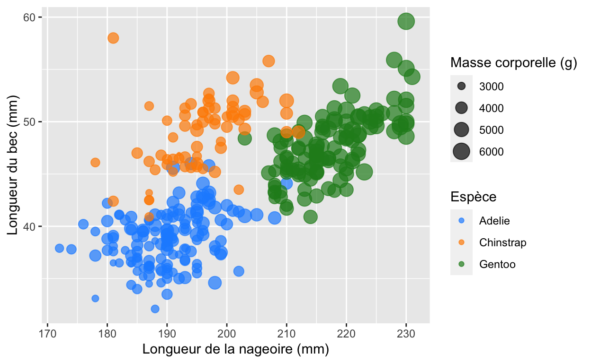
library(palmerpenguins)
data("penguins")
penguins <- na.omit(penguins)library(palmerpenguins)
data("penguins")
penguins <- na.omit(penguins)
# Créer une palette de couleurs personnalisée
palette_couleurs <- c("dodgerblue", "darkorange", "forestgreen")
# Créer le bubble plot coloré
p <- ggplot(penguins, aes(x = flipper_length_mm, y = bill_length_mm, size = body_mass_g, color = species)) +
geom_point(alpha = 0.7) +
scale_color_manual(values = palette_couleurs) +
labs(x = "Longueur de la nageoire (mm)",
y = "Longueur du bec (mm)",
color = "Espèce",
size = "Masse corporelle (g)")
print(p)Facettes
Principe
La librairie ggplot2propose un outils extrêmement
puissant permettant de diviser un graphique en panneaux (facettes) en
fonction des niveaux de variables catégorielles spécifiées.
L’utilisation des facettes permet ainsi d’explorer les données
en fonction d’un facteur ou d’un groupe de facteurs donnés.
Pour l’exemple suivant nous allons créer une matrice contenant les
résultats d’un test ELISA fictif dans lequel on mesure
à 2 temps différents (jours) les expériences réalisées par quatre
opérateurs différents.
url <- "https://zenodo.org/record/8210893/files/elisa_artificial.txt"
elisa <- read.table(url, sep="\t", header=TRUE, row.names=1)
head(elisa)Il s’agit d’un jeu de données fictif d’un test ELISA utilisant des plaques de 96 puits comme on peut le vérifier ici:
table(elisa$user, elisa$day)La fonction facet_wrap()
Il devient très facile avec la syntaxe de ggplot2 de produire des
histogrammes correspondant aux intensité de coloration obtenues dans
chacun des puits (value) pour un expérimentateur donné
(user). Dans l’exemple ci-dessous, vous noterez
l’utilisation de la fonction facet_wrap():
- Cette fonction permet de créer un arrangement de facettes
unidimensionnel que l’on peut éventuellement représenter sur
plusieurs lignes à l’aide des arguments
nrowetncol. - L’argument
facetspassé àfacet_wrap()doit être une formule (formula). Dans notre exemple,facets = ~ userpeut se traduire par ’crée des panneaux graphiques en fonction de la valeur de la variableuser.
p <- ggplot(data = elisa,
mapping = aes(x=value))
p + geom_histogram() +
facet_wrap(facets = ~ user)Dans un but exploratoire, on peut, de même, analyser les
distributions des valeurs obtenues en fonction de l’opérateur
(user) et du jour (day).
p <- ggplot(data = elisa,
mapping = aes(x=value))
p + geom_histogram() +
facet_wrap(facets = ~ user + day)La fonction facet_grid()
Etant donné que chaque utilisateur à réalisé une expérience ELISA le
lundi et le vendredi ou peut choisir une représentation
bidimensionnelle en facettes avec facet_grid()
(une grille/matrice de facettes). Notez que l’argument
facets est ici positionné sur user ~ day ce
qui indique que user sera en lignes et day en
colonnes.
p <- ggplot(data = elisa,
mapping = aes(x=value))
p + geom_histogram() +
facet_grid(facets = user ~ day)Exemple d’application: heatmap des plaques ELISA
A partir des données numériques chargées dans R, on peut être intéressé à reproduire une image code-couleur (heatmap) des plaques ELISA produites par les différents utilisateurs.
- On dispose des coordonnées
x(elisa$rows) ety(elisa$columns) des puits dans la plaque.
- On associera à
fill, qui est données parvalue.
On peut donc utiliser geom_raster() pour représenter une
plaque ELISA et partitionner le graphique en fonction de
useret day.
p <- ggplot(data = elisa,
mapping = aes(x=columns, y=rows, fill=value))
p + geom_raster() +
facet_grid(facets = user ~ day) Pour geom_raster()qui représente ici la variable
numérique continue value on utilisera pour le
contrôle des couleurs l’une des fonctions suivantes:
scale_fill_gradient(): Cette fonction est utilisée pour spécifier les couleurs d’un remplissage (fill) de manière graduelle dans un graphique, en utilisant une seule couleur de début et une seule couleur de fin.scale_fill_gradient2() : Cette fonction est similaire à scale_fill_gradient(), mais elle permet de spécifier une couleur supplémentaire en plus de la couleur de début et de fin. Cette couleur supplémentaires sert à définir un point médian ou une valeur centrale dans l’échelle de couleurs, créant ainsi un gradient bicolore.
scale_fill_gradientn() : Cette fonction est utilisée pour spécifier un gradient de remplissage avec plusieurs couleurs personnalisées. Vous pouvez spécifier les couleurs que vous souhaitez utiliser dans l’échelle de couleurs en fonction de vos données et de vos préférences.
p <- ggplot(data = elisa,
mapping = aes(x=columns, y=rows, fill=value))
p + geom_raster() +
facet_grid(facets = user ~ day) +
scale_fill_gradientn(colours = c("#0000BF", "#0000FF",
"#0080FF", "#00FFFF",
"#40FFBF", "#80FF80",
"#BFFF40", "#FFFF00",
"#FF8000", "#FF0000",
"#BF0000"))Ordonner les lignes/colonnes
Vous aurez peut être noter que les lignes ne sont pas idéalement ordonnées. On souhaiterait plutôt que l’ordre suivant apparaîsse: ‘cont’, ‘a’, ‘b’, ‘c’…
Dans ggplot2 pour ordonner les facteurs il faut créer
des variables ordinales. Cela peut se faire comme nous l’avons vu
précédemment avec l’argument ordered=TRUEde la fonction
factor.
- Modifier le code suivant pour que les colonnes soient ordonnées
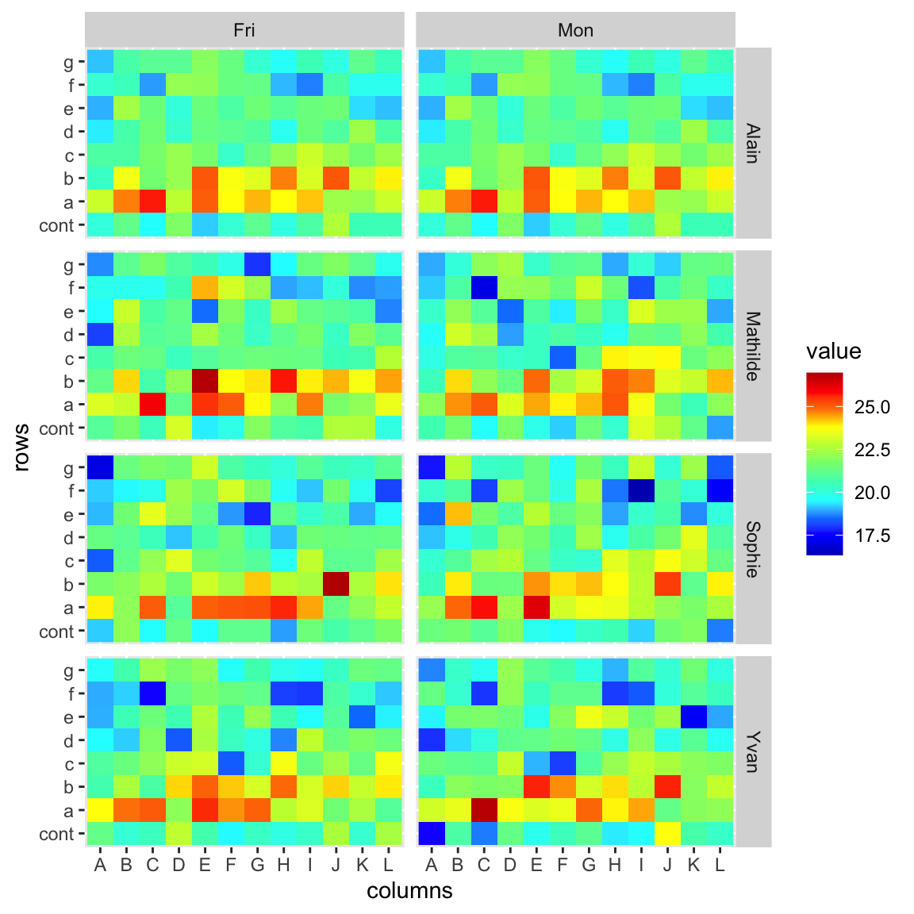
___
p <- ggplot(data = elisa,
mapping = aes(x=columns, y=rows, fill=value))
p + geom_raster() +
facet_grid(facets = user ~ day) +
scale_fill_gradientn(colours = c("#0000BF", "#0000FF",
"#0080FF", "#00FFFF",
"#40FFBF", "#80FF80",
"#BFFF40", "#FFFF00",
"#FF8000", "#FF0000",
"#BF0000"))url <- "https://zenodo.org/record/8210893/files/elisa_artificial.txt"
elisa <- read.table(url, sep="\t", header=TRUE, row.names=1)
elisa$rows <- factor(x = elisa$rows, ordered = T, levels=c('cont', letters[1:7]))
p <- ggplot(data = elisa,
mapping = aes(x=columns,
y=rows,
fill=value))
p <- p + geom_raster() +
facet_grid(facets = user ~ day) +
scale_fill_gradientn(colours = c("#0000BF", "#0000FF",
"#0080FF", "#00FFFF",
"#40FFBF", "#80FF80",
"#BFFF40", "#FFFF00",
"#FF8000", "#FF0000",
"#BF0000"))
print(p)Personnalisation du graphique
Thèmes prédéfinis
Il existe de nombreuses manière de paramétrer l’aspect visuel général du graphique. En première intension on peut appliquer un thème prédéfini qui agit sur différents paramètres du graphique (polices, tailles des charactères, style des axes, couleur de fond, contraste…). Il existe une dizaine de thèmes préintégrés à ggplot2. Les noms de ces fonctions de paramétrages globaux commencent généralement par ‘theme_’.
apropos("^theme_") [1] "theme_bw" "theme_classic" "theme_dark" "theme_get"
[5] "theme_gray" "theme_grey" "theme_light" "theme_linedraw"
[9] "theme_minimal" "theme_replace" "theme_set" "theme_test"
[13] "theme_update" "theme_void" Par exemple:
theme_gray(): Le thème signature de ggplot2 avec un fond gris et des lignes de grille blanches, conçu pour mettre les données en avant tout en facilitant les comparaisons.
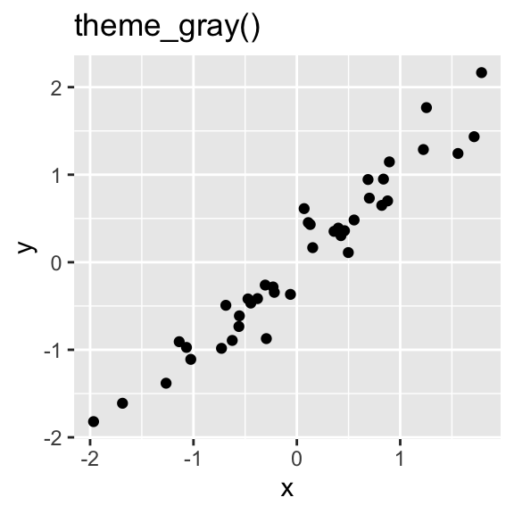
theme_bw(): Le thème classique de ggplot2 avec un arrière-plan gris et des lignes de grille blanches, conçu pour mettre les données en avant tout en facilitant les comparaisons. Peut être mieux adapté aux présentations affichées à l’aide d’un projecteur.
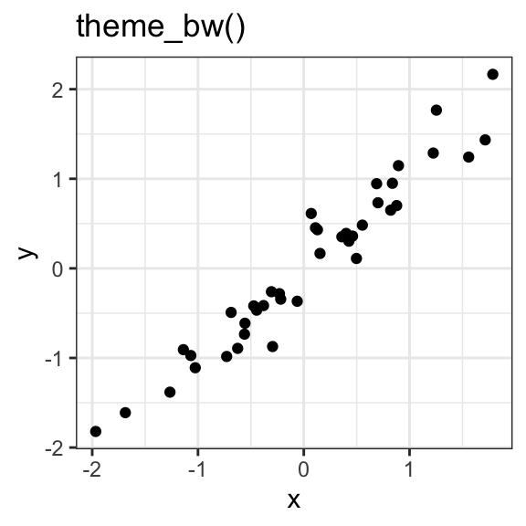
theme_linedraw(): Un thème avec uniquement des lignes noires de différentes largeurs sur fond blanc, rappelant un dessin au trait. L’objectif est similaire à celui detheme_bw().
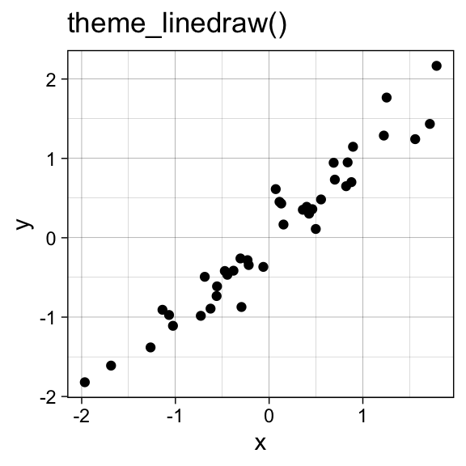
theme_void(): Un thème totalement vide.
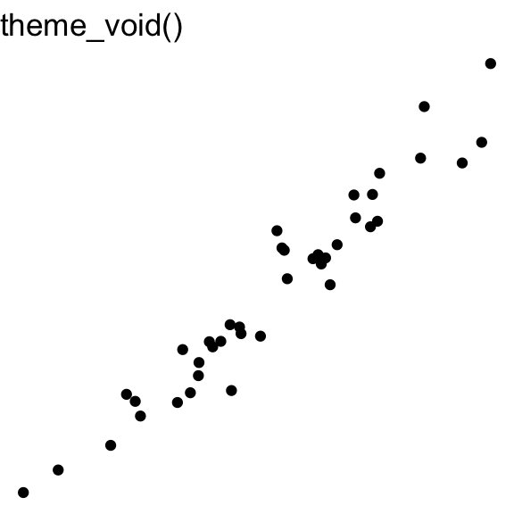
theme_minimal(): un thème totalement épuré.
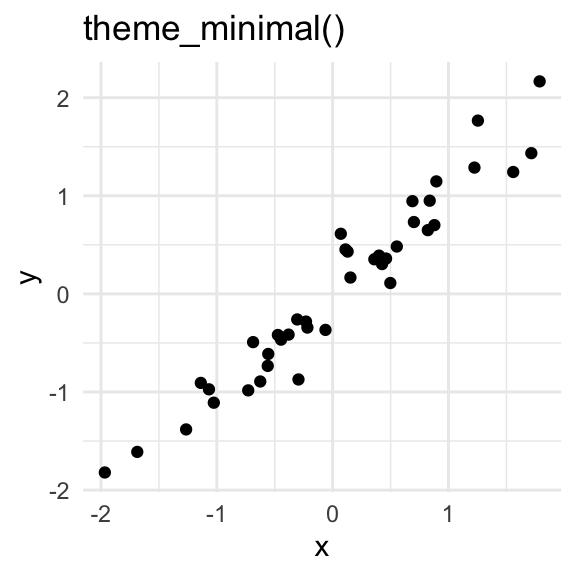
theme_dark()dont le nom est très parlant…
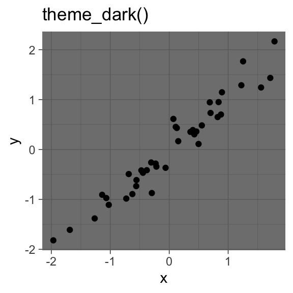
theme_classic(),theme_test(),theme_dark(),theme_light()…
D’autres thèmes prédéfinis sont disponibles dans la librairie ggthemes.
- Par exemple
theme_excel()pour les nostalgiques du tableur Microsoft… L’aide indique: “Thème permettant de reproduire l’affreuse monstruosité qu’était l’ancien graphique Excel à fond gris. Ne l’utilisez jamais.” :). A noter que vous pouvez aussi bénéficier de l’hideuse palette excel (scale_colour_excel()). Un must… :)
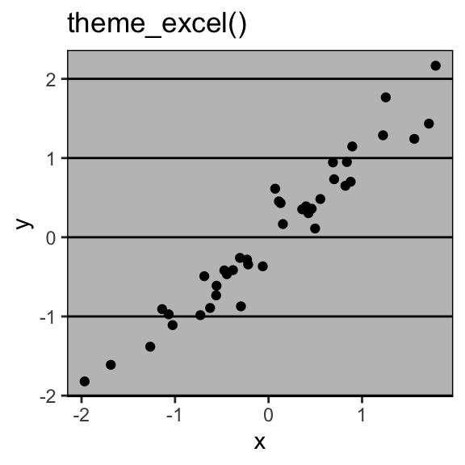
- Ou encore
theme_wsj()pour simuler un diagramme du Wall Street Journal…

- Essayez successivement d’ajouter l’un des thèmes suivant au
diagramme \(p\):
theme_bw(),theme_classic(),theme_dark(),theme_gray(),theme_grey(),theme_light(),theme_minimal(),theme_void(),ggthemes::theme_wsj(),ggthemes::theme_excel(),ggthemes::theme_excel_new(),ggthemes::theme_economist()…
p <- p + theme_bw()
print(p)p <- p + theme_bw()
print(p)
p <- p + theme_classic()
print(p)
p <- p + theme_dark()
print(p)
p <- p + theme_light()
print(p)
p <- p + theme_minimal()
print(p)
p <- p + ggthemes::theme_wsj()
print(p)
p <- p + ggthemes::theme_excel()
print(p)
p <- p + ggthemes::theme_excel_new()
print(p)
p <- p + ggthemes::theme_economist()
print(p)
#...Les fonctions theme() et element_*()
Au delà de l’application de thèmes prédéfinis (comme theme_minimal() ou theme_bw()) on pourra personnaliser chaque aspect du graphique selon les besoins.
La fonction
theme()offre une flexibilité maximale pour personnaliser l’apparence de vos graphiques. Par exemple, vous pouvez spécifier la police, la taille de la police et la couleur du texte des titres d’axe et des légendes, changer le fond du graphique pour s’adapter à un thème sombre ou clair…Les fonctions
element_*()(notammentelement_text(),element_line(),element_rect(),element_blank()…) sont utilisées en combinaison avectheme()pour contrôler des éléments spécifiques du graphique.La fonction
element_text()est utilisée pour définir la police, la taille de la police et la couleur d’un élément textuelLa fonction
element_line()permet de personnaliser les lignes du graphique, comme l’épaisseur de lignes ou le type de traits.La fonction
element_rect()permet de personnaliser des éléments de type boîtes/rectangles.Vous pouvez utiliser
element_blank()pour supprimer complètement certains éléments du graphique si nécessaire.
- Placez votre curseur entre les deux parenthèses et appuyez sur la
toucher
de votre clavier pour demander l’ensemble des arguments de theme(). Cela permet de révéler l’ensemble des éléments du graphique qui sont modifiables (ils sont nombreux…).
theme()# rect
# text
# title
# aspect.ratio
# axis.title
# axis.title.x
# axis.title.x.top
# axis.title.x.bottom
# axis.title.y
# axis.title.y.left
# axis.title.y.right
# axis.text
# axis.text.x
# axis.text.x.top
# axis.text.x.bottom
# axis.text.y
# axis.text.y.left
# axis.text.y.right
# axis.ticks
# axis.ticks.x
# axis.ticks.x.top
# axis.ticks.x.bottom
# axis.ticks.y
# axis.ticks.y.left
# axis.ticks.y.right
# axis.ticks.length
# axis.ticks.length.x
# axis.ticks.length.x.top
# axis.ticks.length.x.bottom
# axis.ticks.length.y
# axis.ticks.length.y.left
# axis.ticks.length.y.right
# axis.line
# axis.line.x
# axis.line.x.top
# axis.line.x.bottom
# axis.line.y
# axis.line.y.left
# axis.line.y.right
# legend.background
# legend.margin
# legend.spacing
# legend.spacing.x
# legend.spacing.y
# legend.key
# legend.key.size
# legend.key.height
# legend.key.width
# legend.text
# legend.text.align
# legend.title
# legend.title.align
# legend.position
# legend.direction
# legend.justification
# legend.box
# legend.box.just
# legend.box.margin
# legend.box.background
# legend.box.spacing
# panel.background
# panel.border
# panel.spacing
# panel.spacing.x
# panel.spacing.y
# panel.grid
# panel.grid.major
# panel.grid.minor
# panel.grid.major.x
# panel.grid.major.y
# panel.grid.minor.x
# panel.grid.minor.y
# panel.ontop
# plot.background
# plot.title
# plot.title.position
# plot.subtitle
# plot.caption
# plot.caption.position
# plot.tag
# plot.tag.position
# plot.margin
# strip.background
# strip.background.x
# strip.background.y
# strip.clip
# strip.placement
# strip.text
# strip.text.x
# strip.text.x.bottom
# strip.text.x.top
# strip.text.y
# strip.text.y.left
# strip.text.y.right
# strip.switch.pad.grid
# strip.switch.pad.wrapExemple
Ci-dessous on paramètre différents éléments d’un graphique (avec plus
ou moins de bon goût…). Vous pourrez constater qu’il est assez évident
de savoir selon le contexte si l’on doit paramètrer avec
element_text(), element_line() ou
element_rect(). Vous noterez que les noms des arguments
sont redondants entre ces trois fonctions (color, size…) ce qui les rend
facile d’utilisation.
p <- p + theme_minimal()
p <- p + theme(strip.background = element_rect(color="red", fill="orange"),
strip.text = element_text(color="white", face="bold"),
axis.text.x = element_text(color="blue", size=7, angle=45, family = "Helvetica", face="bold"),
axis.text.y = element_text(color="darkviolet", size=10, family = "Times", face="bold"),
axis.ticks.x = element_line(color="brown", linewidth=1),
axis.ticks.y = element_line(color="darkturquoise", linewidth=1),
plot.background = element_rect(fill="paleturquoise"),
)
#...Exercices
Dans la diagramme suivant :
- Modifiez la police de caractère (‘family=“Times”’) du titre du graphique.
- Modifiez l’angle du texte de l’axe des x (angle=45°).
- Modifiez la couleur de l’arrière plan (fill).
- Eliminer les lignes secondaires de la grille (avec element_blank()).
- Ajouter une ligne de contour au boîtes contenant les légendes.
p <- p + ggtitle("Longeurs des nageoires vs becs") +
theme(plot.title = ___,
axis.text.x = ___,
plot.background = ___,
panel.grid.minor = ___,
legend.background = element_blank(),
legend.box.background = ___
)
print(p)p <- p + ggtitle("Longeurs des nageoires vs becs") +
theme(plot.title = element_text(family="Times"),
axis.text.x = element_text(angle=45),
plot.background = element_rect(fill="#EEDDAA"),
panel.grid.minor = element_blank(),
legend.background = element_blank(),
legend.box.background = element_rect(color = "black", size=1)
)
print(p)Exercices
Le jeu de données
- Ici, notre jeu de données contient plusieurs informations relatives à la quasi totalité des transcrits connus dans le génome humain (un par ligne). Elles ont été produites au format tsv en utilisant le logiciel pygtftk (v1.6.3) à partir d’un fichier GTF téléchargé depuis ensembl (genome version GRCh38, release 92).
Le fichier étant un peu volumineux, nous allons le téléchargez et le placer dans votre dossier utilisateur afin de ne pas avoir à le re-télécharger par la suite.
# Création du répertoire de travail
dir_path <- file.path(fs::path_home(), ".rtrainer")
dir.create(dir_path, showWarnings = FALSE)
## L'url pointant sur le jeu de données.
url <- "https://zenodo.org/record/8211383/files/Homo_sapiens.GRCh38.110.subset_2.tsv.gz"
# Téléchargement
file_path <- file.path(dir_path, "Homo_sapiens.GRCh38.110.subset_2.tsv.gz")
download.file(url=url, destfile = file_path, quiet = TRUE)
dir(dir_path)Nous allons charger le fichier dans R avec la fonction
read.table(). On en profite pour associer la colonne
transcript_id aux noms des lignes
(row.names=6).
tx_info <- read.table(file=file_path, header=TRUE, sep="\t", row.names=6)
dim(tx_info)Voilà notre jeu de données.
head(tx_info)Nombre de transcripts par chromosome
Question 1
Réalisez un diagramme avec geom_bar() montrant le nombre
de transcrits différents par chromosome (seqid). - Utilisez
+ coord_flip() pour forcer la rotation du diagramme. -
Ordonnez les chromosomes de la manière suivante: 1, 2, 3 .. 22, X, Y,
MT.
p <- ggplot(data=tx_info, ___) +
___tx_info$seqid <- factor(tx_info$seqid,
levels = c(as.character(1:22), "X", "Y", "MT"),
ordered = TRUE)
p <- ggplot(data=tx_info,
mapping=aes(x=seqid)) +
geom_bar() + coord_flip()Question 2
Dans le
data.frametx_info, créez un nouvelle colonnetx_genomic_size_log10contenant la variabletx_genomic_sizeconvertie en logarithme base 10 (log10()). A l’aide d’histogrammes et de facettes, explorez la variabletx_genomic_size_log10(taille du transcript intron compris en logarithme base 10).Utilisez
geom_histogram()etfacet_grid(gene_biotype~., scale="free_y").L’argumentscale="free_y"permet d’avoir, pour chaque facette une échelle spécifique.Paramétrez (
theme()) convenablement la taille des éléments textuels et leurs orientation.
tx_info$tx_genomic_size_log10 <- log10(tx_info$tx_genomic_size)
p <- ggplot(data=tx_info,
mapping=aes(x=tx_genomic_size_log10)) +
geom_histogram(bins=50) +
facet_grid(gene_biotype~., scale="free_y") +
labs(x="Taille génomique des transcrits (log10)") +
theme_minimal() +
theme(panel.grid.minor = element_blank(),
strip.text.y = element_text(angle=0, size=5),
axis.text.y = element_text(size=5))Même question.
Utilisez geom_density().